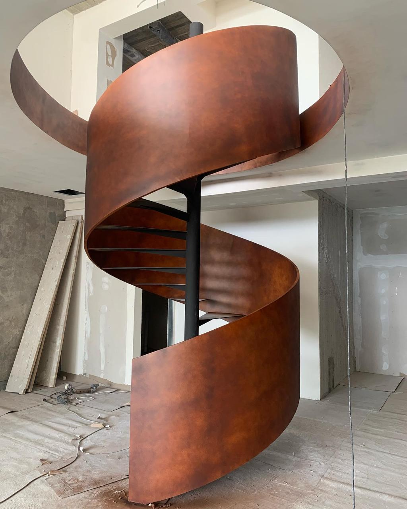
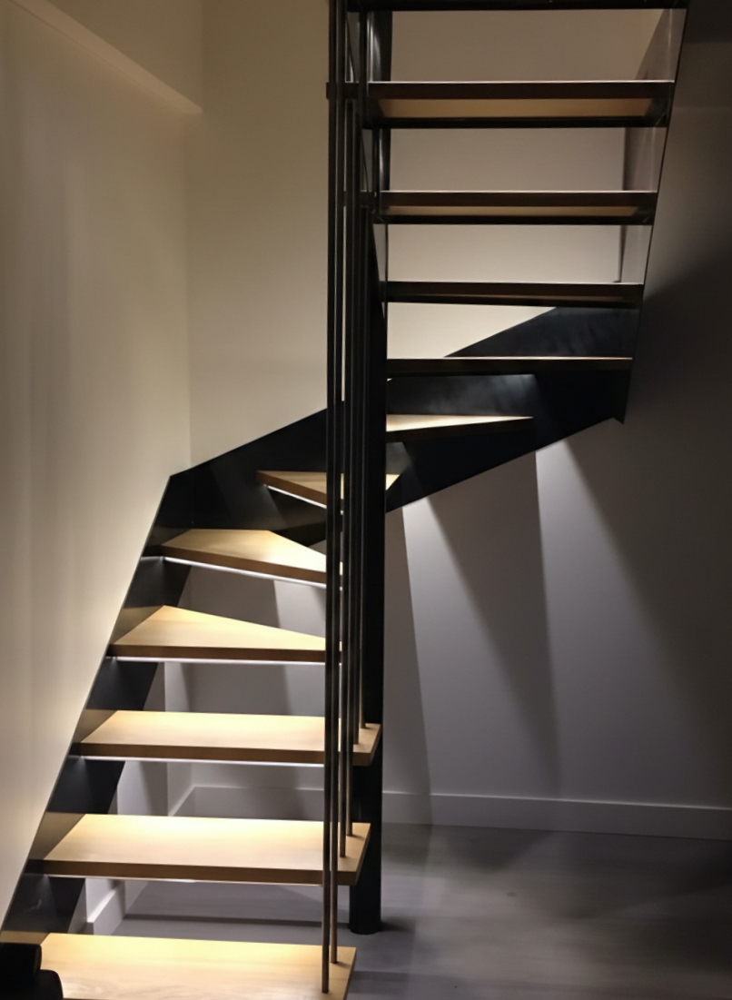
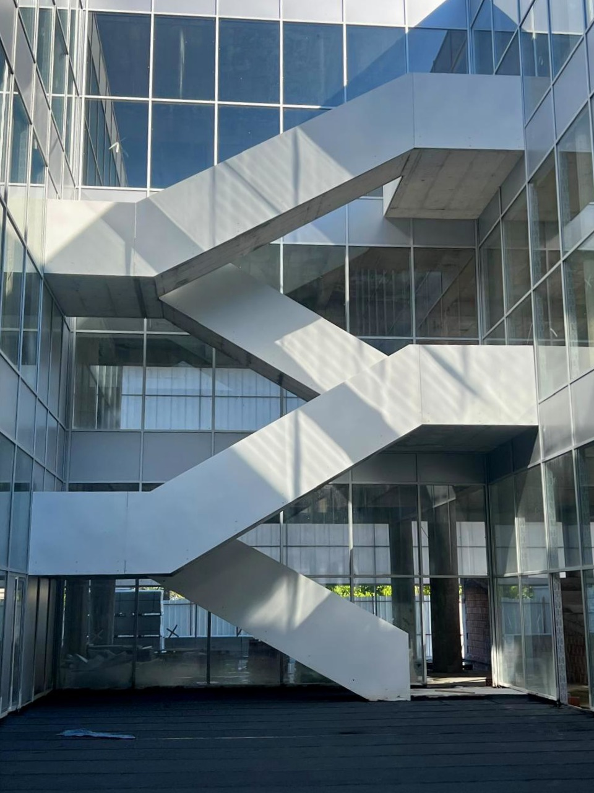
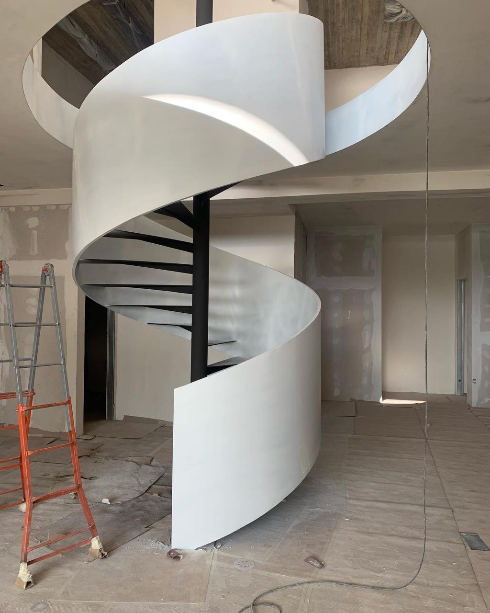
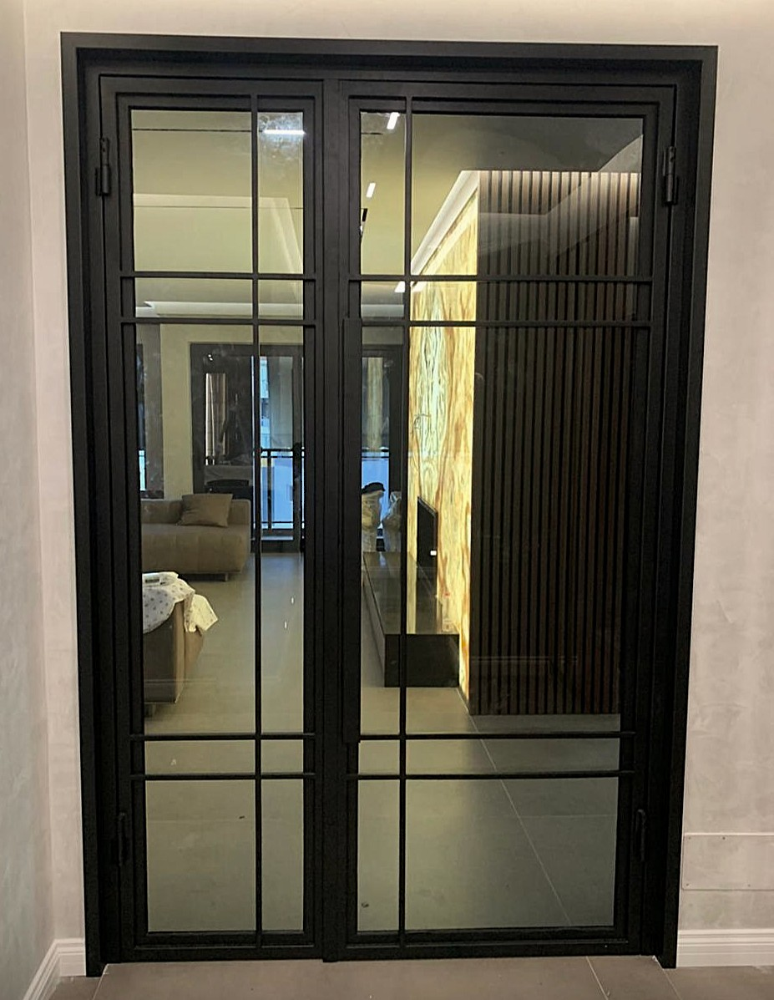
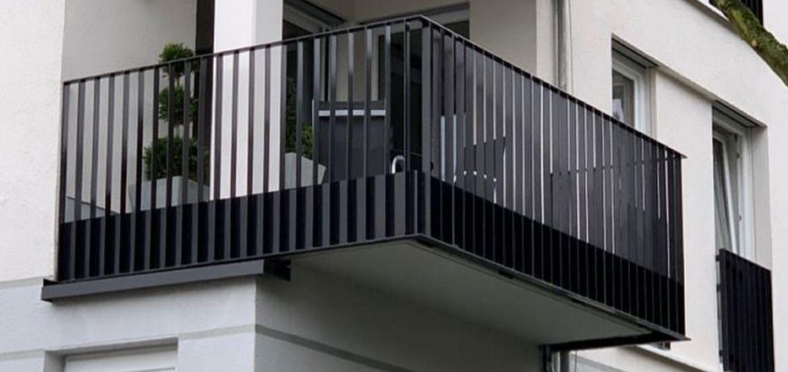
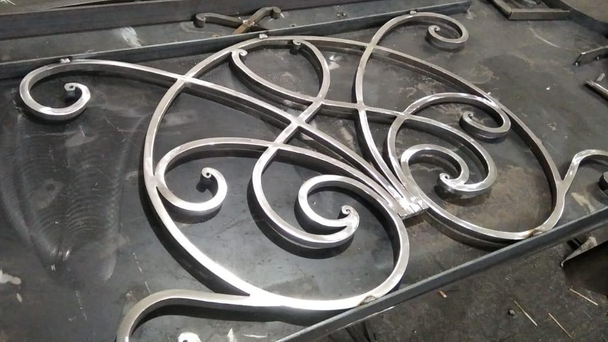
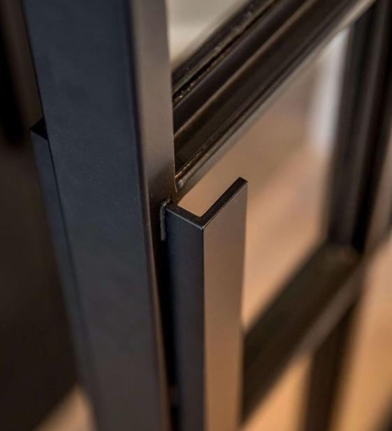
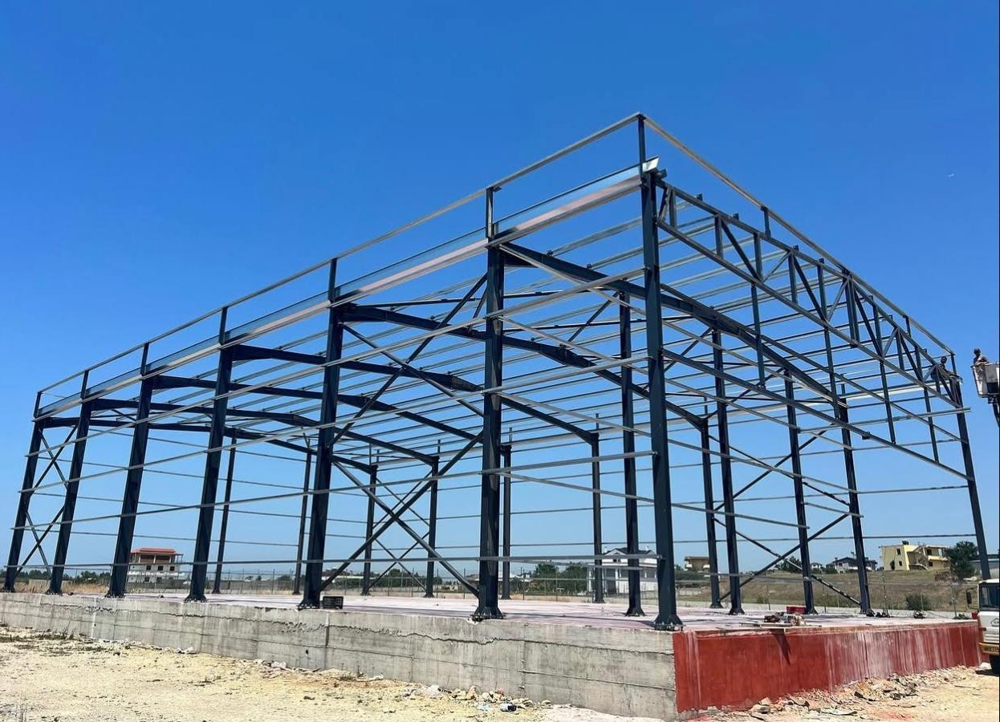

Punime metalike me porosi — shkallë, parmakë dhe struktura çeliku të bëra me dorë në Tiranë.
Pa detyrim. Ofertë brenda 48 orëve.


Prodhim me porosi i strukturave dhe objekteve prej çeliku. Çdo punë fillon me një bisedë — dhe mbaron kur ju jeni plotësisht të kënaqur.
Prodhimet tona mund t'i gjeni në arkitekturë dhe dizajn interior — çdo element i fabrikuar me duart tona, brenda punishtjes.

Shkallë Spirale

Ndarëse Zyre

Skulpturë Metalike

Mbrojtëse Ballkoni
Nga arkitektura industriale tek dekorat artistike — punime çeliku me precizion dhe karakter.



Si Punojmë
Koha aktuale e pritjes: 3–4 javë nga miratimi i vizatimeve.
Biseda
Takohemi, dëgjojmë dhe kuptojmë çfarë keni nevojë. Pa formula — vetëm bisedë e drejtpërdrejtë.
Ofertë brenda 48 orëveVizatimi
Ndërtojmë vizatime teknike dhe modele 3D — ju miratoni çdo detaj para se të prekë çeliku.
Vizatime brenda 5–7 ditëveFabrikimi
Punojmë brenda punishtjes sonë — saldim MIG/TIG, prerje me precizion, trajtim sipërfaqeje.
Prodhim 3–6 javëDorëzimi
Ekipi ynë instalon, kontrollon dhe dorëzon. Nuk largohemi derisa gjithçka është si duhet.
Garanci 2 vjetÇfarë Duhet të Dini
Çmimi varet nga dimensionet, materiali (çelik i lyer, inoks ose corten), forma dhe finitura. Projektet tona fillojnë nga 1 500 € dhe variojnë sipas kompleksitetit. Na kontaktoni për një vlerësim falas brenda 48 orëve.
Shumica e projekteve janë gati brenda 3–6 javësh nga miratimi i vizatimeve. Vizatimet teknike dhe modelet 3D janë gati brenda 5–7 ditëve. Instalimi zakonisht kryhet brenda 1–2 ditëve pune.
Po. Kemi realizuar projekte në Durrës, Vlorë, Shkodër, Elbasan dhe qytete të tjera. Transporti dhe instalimi koordinohen nga ekipi ynë — pa ndërmjetës.
Po. Të gjitha punimet tona mbulohen nga garancia 2-vjeçare për defekte fabrikimi. Çeliku i trajtuar siç duhet zgjat dhjetëra vjet — dhe ne qëndrojmë pas çdo punë.
Absolutisht. Jemi nën-kontraktorët e preferuar të shumë arkitektëve dhe dekoratorëve në Shqipëri. Pranojmë skica, AutoCAD, DXF, PDF ose thjesht një foto dhe idenë tuaj — dhe ndërtojmë nga zeroja.
Pagesa ndahet në tre faza: 30% paradhënie pas miratimit të vizatimeve, 40% gjatë prodhimit dhe 30% pas instalimit. Çeliku që përdorim është i certifikuar sipas standardeve europiane (EN) — inoks AISI 304/316, çelik konstruktiv S235/S355 dhe corten A606.
Para se të prekë çeliku, ju miratoni çdo detaj — vizatimet teknike dhe modelet 3D. Kemi të drejtë rishikimi pa kosto shtesë deri sa dizajni të jetë saktësisht si e dëshironi. Prodhimi fillon vetëm pas nënshkrimit të miratimit tuaj.
Po. Portfolioja jonë në këtë faqe tregon një pjesë të punimeve të realizuara. Gjithashtu mund të vizitoni faqen tonë në Instagram @work_steel_shpk ku publikojmë projekte të reja rregullisht. Me kërkesë, mund të organizojmë një vizitë te punimet e klientëve tanë.
Na Kontaktoni
Gati për të filluar projektin tuaj? Na dërgoni mesazhin tuaj me foto dhe skica. Ju përgjigjemi brenda 24 orëve me një afat kohor dhe vlerësim çmimi.
Shtoni skedarë këtu
Zgjidhni SkedarëJPG, PNG, HEIC, PDF, DWG — max 10MB per file